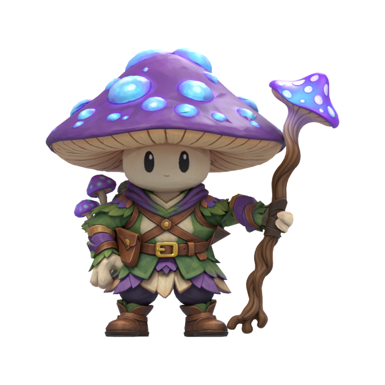
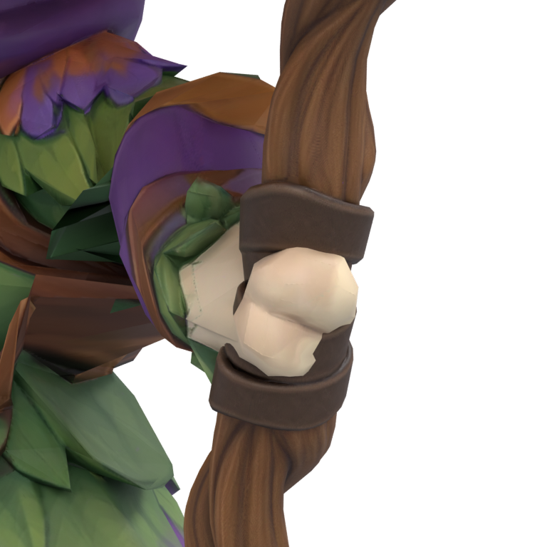
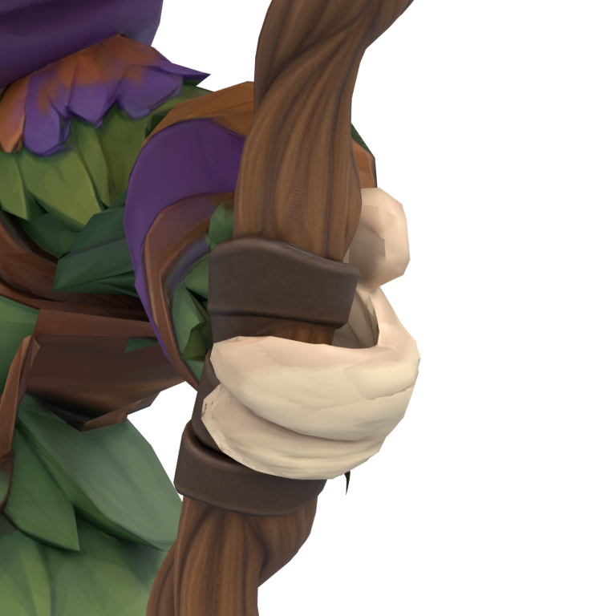
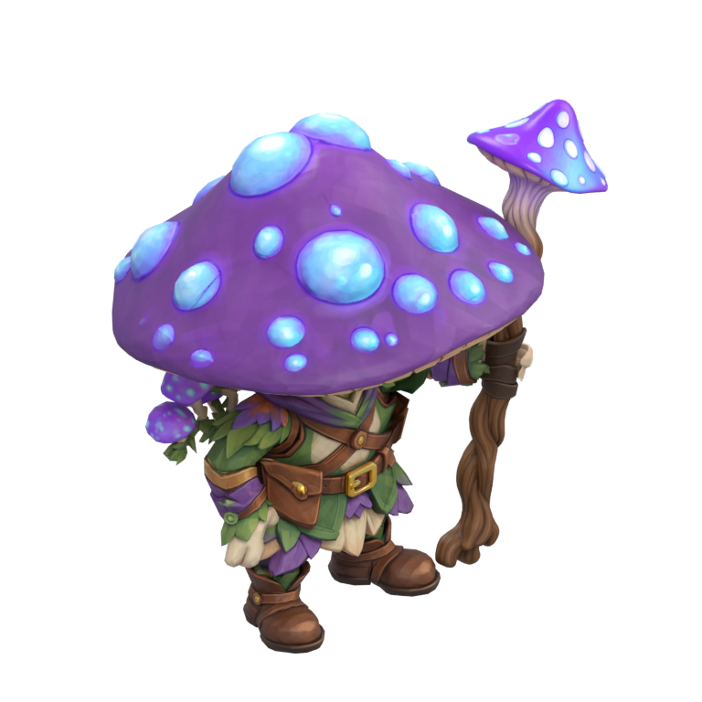
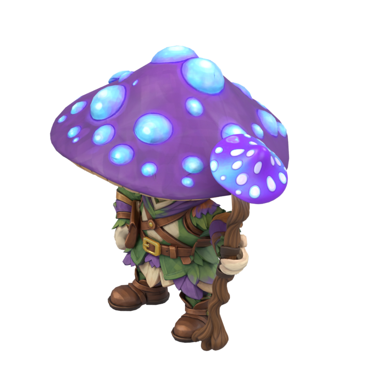
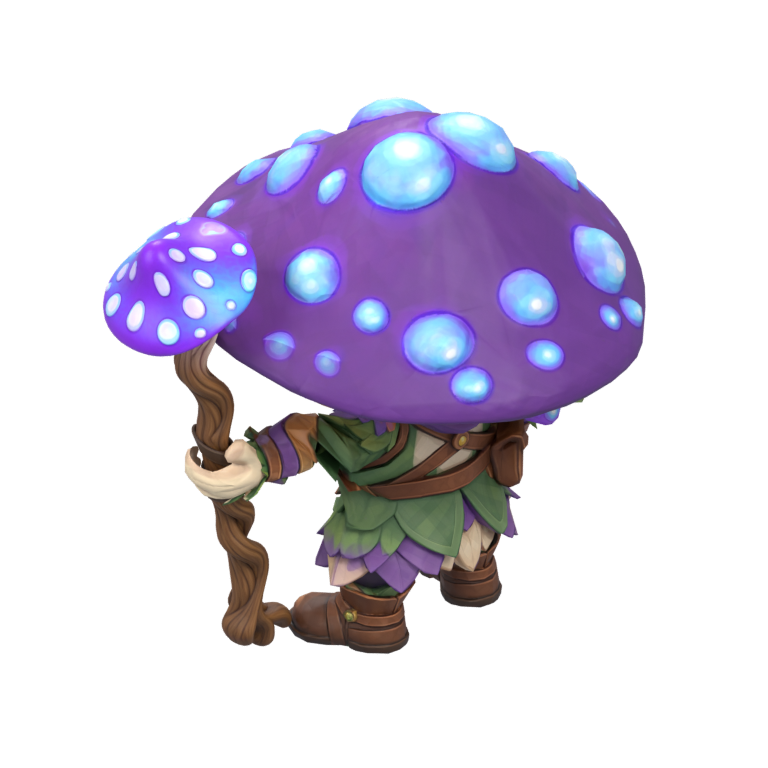
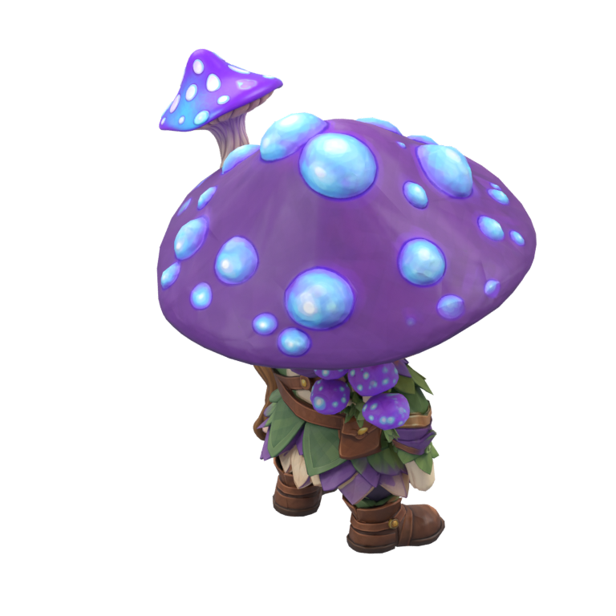
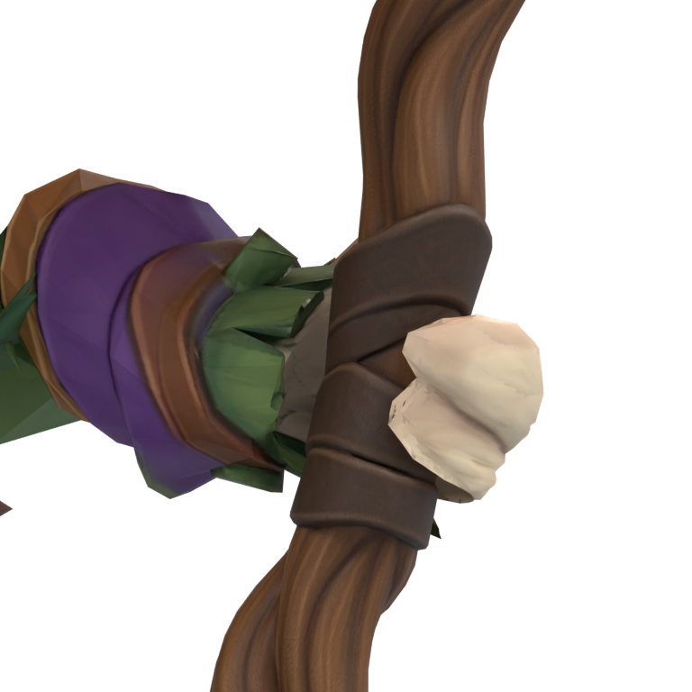
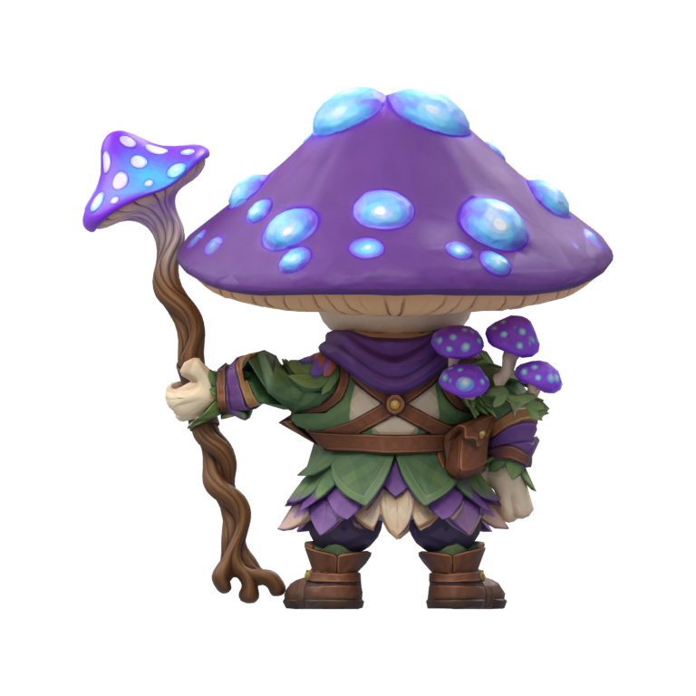

Assemblage des GLB fournis, avec leurs textures d’origine. La main est refermée autour du manche dans la copie Blender de travail. Proposition statique, avant les animations.



La vérification inclut désormais toute la main : aucune intersection de surfaces détectée dans cette pose. Les GLB fournis restent intacts.




Le grand chapeau du modèle masque beaucoup le visage sous la caméra isométrique à 30°. Ses proportions sont conservées ici : la lisibilité en jeu reste à valider avant les animations.


Assemblage Blender · Reproduction et limites · Contrôle de la scène sauvegardée